| n | m | s | Median |
|---|---|---|---|
| 100 | 95.87 | 16.66 | 95.01 |
4 Vergleich von Mittelwerten
Dass die Sonne morgen aufgehen wird, ist eine Hypothese; und das heisst: wir wissen nicht, ob sie aufgehen wird.
— Ludwig Wittgenstein (Tractatus logico-philosophicus, 6.36311)
4.1 Lernziele
Important
Identifiziere Daten als gepaart bzw. verbunden, wenn zu jeder Beobachtungseinheit zwei Messungen der gleichen Variable vorliegen. Beispiele sind Prä-Post-Messungen (Messwiederholungen) bei einer Interventionsstudie oder die Preise für ein Buch in verschiedenen Buchhandlungen.
Berechne bei gepaarten Daten stets die Differenz zwischen den Datenpaaren (paarweise Differenzen). Damit können Teststatistiken (Prüfgrössen) und somit statistische Tests durchgeführt werden können.
Identifiziere Stichproben als unabhängig, wenn die Werte einer Stichprobe keine Informationen über die Werte der anderen Stichprobe enthalten. Dies ist z.B. bei kontrollierten Studien der Fall, bei denen Daten von Interventions- und Kontrollgruppen miteinander verglichen werden: Die Daten der Interventionsgruppe sind unabhängig von den Daten der Kontrollgruppe und enthalten keine Information über die Kontrollgruppe.
Beachte, dass beim Vergleich der Differenz von zwei Parametern, die Interpretation von Konfidenzintervallen stets eine vergleichende Aussage beinhaltet; erwähne, welche Gruppe den grösseren Parameterwert hat.
Verwerfe die Nullhypothese, wenn ein Konfidenzintervall für eine Differenz zwischen zwei Parametern den Wert 0 nicht enthält.
Gehe bei Hypothesentests stets systematisch vor:
Lege die Prüfgrösse und das Signifikanzniveau fest, formuliere die Hypothesen und berechne die Kennzahlen.
Prüfe die Voraussetzungen (1) Unabhängigkeit der Daten, (2) Normalverteilung der Prüfgrösse und wähle je nach Ergebnis den richtigen Test aus.
Berechne das Konfidenzintervall für \(\mu\) oder \(\delta=\mu_1-\mu_2\).
Berechne den Wert der Teststatistik (Prüfgrösse) und den P-Wert.
Formuliere eine Schlussfolgerung in leicht verständlicher Sprache.
Führe z-Tests für eine und zwei Stichproben von Hand und in
Rdurch (Berechnung des Konfidenzintervalls und des P-Wertes)Führe einstichproben- und zweistichproben t-Tests in
Rdurch und interpretiere alle Aspekte des R Outputs.
4.2 \(t\)-Tests
\(t\)-Tests sind die klassischen Hypothesentests. Sie gehören zur Gruppe der sog. parametrischen Tests. Damit parametrische Tests durchgeführt werden können, muss ein Schätzer (z.B. eine Mittelwertsdifferenz) normalverteilt sein. Aufgrund des zentralen Grenzwertsatzen wissen wir, dass dies bei grossen Stichproben der Fall ist. Bei kleinen Stichproben müssen die Daten selber in der Population annähernd normalverteilt sein.
Wenn diese Voraussetzung nicht erfüllt ist, können alternativ nicht-parametrische Tests verwendet werden. Verteilungsfreie, nicht-parametrische Testverfahren machen keine Annahmen über die Wahrscheinlichkeitsverteilung der untersuchten Variablen und sind deswegen auch anwendbar, wenn die Voraussetzungen an die Verteilungen nicht erfüllt sind, wie z.B. die Annahme einer Normalverteilung, oder wenn die Daten nicht mindestens intervallskaliert sind.
Parametrische Tests haben eine grössere Teststärke (Power) als nicht-parametrische Tests. Mit anderen Worten: Wenn tatsächlich ein Effekt in der Population vorliegt, haben parametrische Tests bessere Chancen, diesen Effekt auch zu entdecken. Zudem sind parametrische Tests einfacher zu interpretieren. Nicht-parametrische Tests prüfen oft eine etwas andere, nicht ganz intuitive Nullhypothese.
Im Zweifel gilt deshalb: Wenn immer möglich, parametrische Tests verwenden. Falls starke Evidenz dafür besteht, dass wichtige Voraussetzungen für ein parametrisches Verfahren nicht erfüllt sind, nicht-parametrische Verfahren wählen.
Nicht-parametrische Tests werden in diesem Skript zur Vollständigkeit erwähnt, gehören aber nicht zum Prüfungsstoff. Nichtparametrische Testverfahren werden am Ende dieses Kapitels vorgestellt.
4.2.0.1 \(t\)-Verteilung versus Normalverteilung
Wie bei der Einführung von Konfidenzintervallen schon beschrieben, verwenden Statistikprogramme bei Annahme von normalverteilten Daten für die Berechnung von Wahrscheinlichkeiten die \(t\)-Verteilung und nicht die Normalverteilung. Der zentrale Grenzwertsatz besagt, dass die Teststatisitk \(T\) \[ T=\frac{\bar{X}-\mu}{s/\sqrt{n}} \] bei \(n\) gross näherungsweise normalverteilt ist, Wenn die Daten selbst normalverteilt sind, dann ist \(T\) exakt \(t\)-verteilt mit \(n−1\) Freiheitsgraden, unabhängig von der Stichprobengrösse \(n\).
Da die \(t\)-Verteilung bei grossem \(n\) die Normalverteilung approximiert, ist sie auch bei nicht normalverteilten Daten und grossem \(n\) eine gute Approximation. Statistikprogramme wie R verwenden daher standardmässig die \(t\)-Verteilung, wenn die Populationsvarianz unbekannt ist – unabhängig davon, ob \(n\) gross oder klein ist.
4.3 \(t\)-Test für eine einfache Stichprobe
Im folgenden Beispiel wird auch die Berechnung von Konfidenzintervallen für $t-verteilte Daten besprochen. Der eigentliche \(t\)-Test ist der letzte Schritt 4.
Beispiel: Werden Volksläufer über die Jahre eher schneller oder langsamer? Für die Bearbeitung diese Frage liegen die Daten des Cherryblossom-Volkslaufs, der jeweils im Frühjahr in Washington, DC durchgeführt wird, vor. Die Laufstrecke ist 16.1 km (10 Meilen) lang (www.cherryblossom.org).
Die durchschnittliche Laufzeit für alle Läufer:innen, die den Lauf 2006 beendet haben betrug 93.29 Minuten. Zum Vergleich liegt uns eine Zufallsstichprobe von 100 Läufer:innen vor, die am Lauf im Jahre 2012 teilgenommen haben (die Teilnehmerzahl betrug im Jahr 2012 16’924 Läufer:innen). Uns interessiert, ob die Läufer:innen zwischen 2006 und 2012 im Durchschnitt schneller oder langsamer geworden sind.
4.3.1 Vorgehen
1. Hypothesen formulieren
Der Vergleichswert aus dem Jahr 2006 ist in diesem Fall der sog. Nullwert: \(\mu_0 = 93.29\).
\(H_0: \mu_{2012} = 93.29\), es gibt keinen Unterschied zwischen der durchschnittlichen Laufzeit von 2006 und dem Referenzwert.
\(H_A: \mu_{2012} \neq 93.39\), es gibt einen Unterschied zwischen der durchschnittlichen Laufzeit von 2006 und dem Referenzwert.
Ist das eine einseitige oder eine zweiseitige \(H_A\)?
Das Signifikanzniveau legen wir auf \(\alpha = 0.05\) fest.
2. Test-Voraussetzungen prüfen
- Wir bestimmen Mittelwert und Standardabweichung und erstellen ein Histogramm für die Laufzeit.
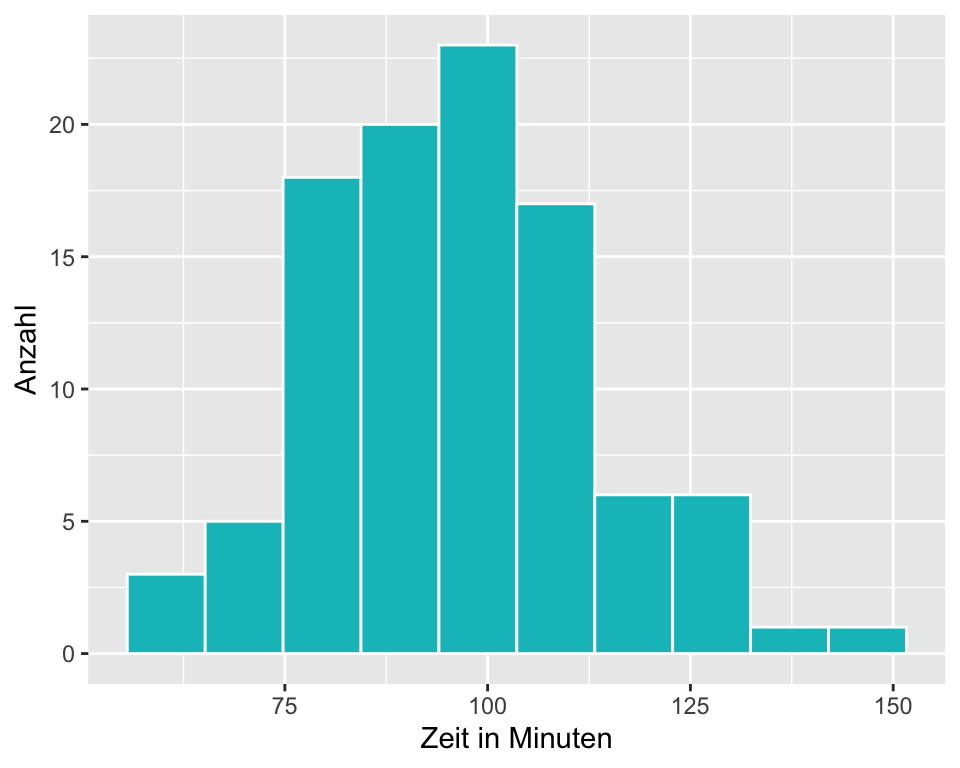
- Unabhängigkeit: Es handelt sich um eine Zufallsstichprobe von 100 aus 16924 Personen.
- Die Verteilung der Daten im Histogramm ist nahezu normal (evtl. etwas linkssteil). Mit welchen Verfahren könnten Sie zusätzlich auf Normalverteilung prüfen?
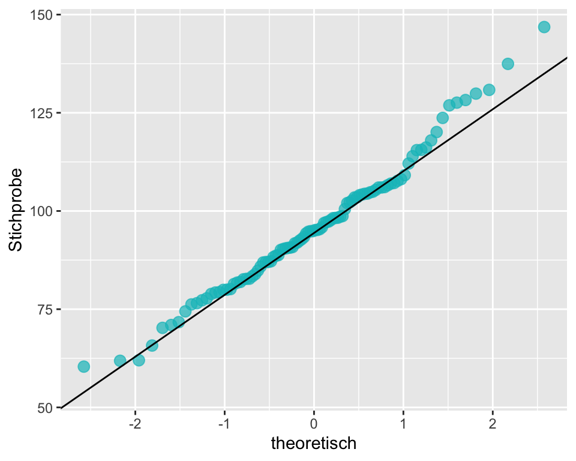
3. Berechnung des 95%-Konfidenzintervalls für \(\mu\)
\[SE = \frac{s}{\sqrt{n}} = \frac{16.66}{\sqrt{100}}=1.66\]
\[CI_{95} = \bar{x} \pm t_{1-\frac{\alpha}{2}, df} \times SE\]
Wir verwenden hier für die Berechnung des 95%-Konfidenzintervalls die \(t\)-Verteilung mit \(df = (100 - 1) = 99\). Weil die Stichprobe mit \(n\) = 100 gross ist, würde eine Berechnung mit der \(z\)-Verteilung praktisch zum gleichen Resultat führen.
Die Berechnung in R:
# die Funktion qt() berechnet eine Quantile für eine bestimmte Fläche und
# einen bestimmten Freiheitsgrad df
qt(.975, df = 99)[1] 1.984217n <- 100 # Stichprobenumfang
m <- 95.87 # Mittelwert
s <- 16.66 # Standardabweichung
SE <- s/sqrt(n) # Standardfehler berechnen
t <- qt(.975, df = 100-1) # t-Wert für 95%-CI und df = n-1 berechnen
CI95 <- m + c(-1, 1) * t * SE # Grenzen für 95%-CI berechnen
round(CI95, 2) # 95%-CI gerundet auf 2 Nachkommastellen ausgeben[1] 92.56 99.18Das 95%-Konfidenzintervall für die durchschnittliche Laufzeit 2012 ist [92.56; 99.18]. Es beinhaltet den Durchschnittswert von 2006 von 93.29 Minuten und wir haben keine Evidenz gegen die Nullhypothese.
4. Berechnung des P-Werts: Ein-Stichproben-t-Test
Die Statistik ist die standardisierte Grösse
\[T = \frac{\bar{X} - \mu_0}{SE}.\]
Diese Grösse ist \(t\)-verteilt mit \(n-1\) Freiheitsgraden, \(T\sim t_{99}\)
Der \(t\)-Wert ist dann:
\[t = \frac{\bar{x} - \mu_0}{SE}.\]
n <- 100 # Stichprobenumfang der Stichprobe 2012
m <- 95.87 # Stichprobenmittelwert 2012
s <- 16.66 # Standardabweichung 2012
mu <- 93.29 # Nullwert 2006
SE <- s/sqrt(n) # Standardfehler für den Stichprobenmittelwert 2012
t_wert <- (m - mu)/SE # Berechnung des t-Werts
round(t_wert, 3) # t-wert auf drei Stellen runden und ausgeben[1] 1.549Der Wert der Teststatistik ist \(t = 1.549\). Den P-Wert können wir wieder mit R berechnen.
p_wert <- 2 * (1-pt(t_wert, df = 99)) # P-Wert für eine zweiseitige Hypothese
p_wert <- round(p_wert, 3) # P-Wert auf 3 Nachkommastellen runden
p_wert # P-Wert anzeigen[1] 0.125Ein P-Wert von \(p\) = 0.125 bedeutet, dass unter der Annahme, dass \(H_0\) wahr ist, ein Ergebnis wie in unserer Stichprobe oder ein noch extremeres Ergebnis mit einer Wahrscheinlichkeit von 12.5 % vorkommt. \(p\) = 0.12 ist grösser als unser Signifikanzniveau \(\alpha\) = 0.05 und wir verwerfen die \(H_0\) nicht.
5. Schlussfolgerung formulieren
Untersucht wurde die Frage, ob sich die durchschnittliche Laufzeit von Volksläufer:innen über die Jahre geändert hat. Als Nullwert wurde die durchschnittliche Laufzeit von 2006 von 93.29 Minuten angenommen. In einer Zufallsstichprobe n = 100 der Läufer:innen am Cherryblossom Run 2012 betrug die durchschnittliche Laufzeit 95.87 [92.56, 99.18] Minuten, \(t_{99}\) = 1.549, \(p\) = 0.125. Die vorliegenden Daten liefern keine Evidenz dafür, dass sich die durchschnittlichen Laufzeiten zwischen 2006 und 2012 verändert haben.
4.3.2 Konfidenzintervall für einen Mittelwert Schritt-für-Schritt:
- Vorbereitung: Berechne den \(\bar{x}\), \(s\) und \(n\) und lege das Konfidenzniveau fest (üblicherweise 95% = 0.95)
- Voraussetzungen: Prüfe, ob die Voraussetzungen erfüllt sind, dass die Daten aus einer Normalverteilung stammen (QQ-Plot).
- Berechnung: Wenn die Voraussetzungen erfüllt sind, berechne SE und berechne die Grenzen des Konfidenzintervalls mit den entsprechenden \(t\)-Quantilen.
- Schlussfolgerung: Interpretiere das Konfidenzintervall im Zusammenhang mit der Fragestellung.
Code-Tipp: \(t\)-Quantile lassen sich in R einfach berechnen:
# für ein 95%-Konfidenzintervall
qt(.975, df)
# für ein 99%-Konfidenzintervall
qt(.995, df)
# für ein 90%-Konfidenzintervall
qt(.95, df)4.3.3 Ein-Stichproben-\(t\)-Test Schritt-für-Schritt:
- Vorbereitung: Identifiziere den für die Frage relevanten Parameter (die Prüfgrösse), formuliere die Hypothesen, lege das Signifikanzniveau \(\alpha\) fest und berechne \(\bar{x}\), \(s\) und \(n\).
- Voraussetzungen: Prüfe, ob die Voraussetzungen erfüllt sind, dass die Daten aus einer normalverteilten Population stammen (QQ-Plot).
- Wenn die Voraussetzungen erfüllt sind, berechne SE, den Wert der Teststatistik (den \(t\)-Wert) und den P-Wert, brauche hierzu die \(t\)-Verteilung mit \(df\) Freiheitsgraden.
- Schlussfolgerung: Beurteile den Hypothesentest, indem du den P-Wert mit dem Signifkanzniveau \(\alpha\) vergleichst. Formuliere eine Schlussfolgerung im Zusammenhang mit der Fragestellung in leicht verständlicher Sprache.
Code-Tipp: Der P-Wert lässt sich in R einfach berechnen:
# P-Wert für eine zweiseitige Hypothese berechnen
2 * (1 - pt(t_wert, df = n - 1)) # df = n - 1 = Stichprobenumfang - 14.3.4 Einstichproben-\(t\)-Test in R
Für das Verständnis ist es gut, die oben beschriebenen Berechnungsschritte manuell nachzurechnen. In der Praxis kommt in der Regel jedoch Software zum Einsatz. Der t-Test ist in R implementiert und kann wie folgt durchgeführt werden:
t.test(x = sample$time, # sample$time = daten$variable
mu = 93.29, # mu = Nullwert
alternative = "two.sided") # zweiseitige Alternativhypothese
One Sample t-test
data: sample$time
t = 1.5489, df = 99, p-value = 0.1246
alternative hypothesis: true mean is not equal to 93.29
95 percent confidence interval:
92.56457 99.17743
sample estimates:
mean of x
95.871 Wie Sie sehen, stimmt das Resultat bis auf Rundungsdifferenzen mit der manuellen Berechnung überein.
4.4 \(t\)-Test für verbundene Stichproben
Von verbundenen bzw. gepaarten Daten sprechen wir dann, wenn zwei Variablen voneinander abhängig sind: Dies bedeutet, dass die Werte der einen Messung die Werte der anderen Messung beeinflussen. Das ist der Fall, wenn wir z.B. die Preise für ein Buch in verschiedenen Läden vergleichen oder wenn wir Messungen bei Individuen zu verschiedenen Zeitpunkten, z.B. vor und nach einer Intervention (Prä-Post-Messungen), durchführen.
Beispiel: In einer Studie wird untersucht, ob die Testpersonen mit einem neuen Schlafmittel länger schlafen als ohne Schlafmittel. Die Studie wird mit 20 Personen durchgeführt. Zuerst wird die Schlafdauer ohne Medikament (Baseline-Messung), dann die Schlafdauer mit Medikament (Follow-Up-Messung) gemessen.
Die Tabelle zeigt die Daten zu den ersten vier Probanden:
| Proband | ohne_Med | mit_Med |
|---|---|---|
| 1 | 5.28 | 5.83 |
| 2 | 5.69 | 4.69 |
| 3 | 4.81 | 4.43 |
| 4 | 5.90 | 6.49 |
Jedem Probanden entsprechen zwei Messungen (Variablen): Eine für die Schlafdauer ohne und eine für die Schlafdauer mit Medikament. In diesem Fall liegen gepaarte Daten vor, da für jede Beobachtungseinheit zwei Messzeitpunkte vorliegen, die miteinander verglichen werden.
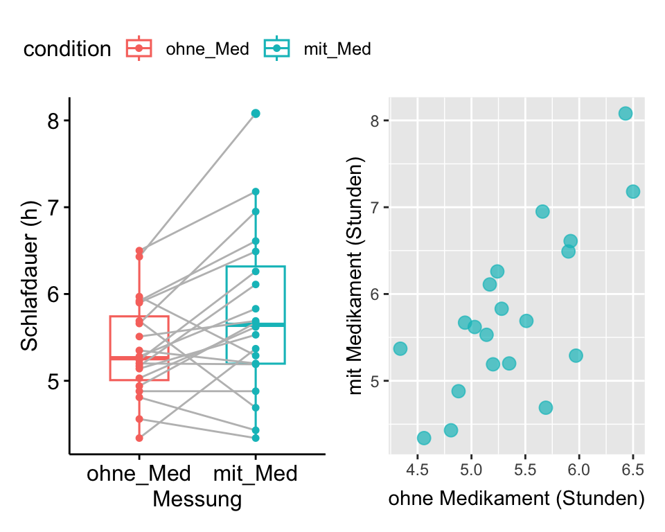
Das Streudiagramm zeigt, dass die Schlafdauer mit Medikament in einem Zusammenhang mit der Schlafdauer ohne Medikament steht: Probanden, die ohne Medikament länger schlafen, schlafen auch mit Medikament länger.
Wenn wir den Effekt einer Intervention bei gepaarten Daten untersuchen, ist die Prüfgrösse die Differenz der Datenpaare, die sog. paarweisen Differenzen. Im vorliegenden Beispiel ist dies die Differenz zwischen der Schlafdauer mit und ohne Medikament. Wenn die Differenzen bei der Datenerhebung noch nicht berechnet wurden, erstellt man eine neue abgeleitete Variable und berechnet für jeden Probanden die paarweisen Differenzen. Dabei ist es wichtig eine konsistente Ordnung einzuhalten: Wenn wir uns für den Effekt des Medikamentes interessieren, berechnen wir die paarweisen Differenzen \(D_i\) durch Subtraktion der Schlafdauer ohne Medikament \(X_1\) von der Schlafdauer mit Medikament \(X_2\).
\(D_i=X_{i2}-X_{i1}, i=1,\dots,n\)
Wenn das Medikament einen positiven Effekt auf die Schlafdauer hat, erhalten wir eine positive Differenz, wenn das Medikament die Schlafdauer verkürzt, erhalten wir eine negative Differenz. Für die Durchführung des t-Tests für gepaarte Daten verwenden wir als Prüfgrösse den Mittelwert der paarweisen Differenzen. Der Mittelwert der paarweisen Differenzen ist das Mass für den Effekt des Medikaments.
| Proband | ohne_Med | mit_Med | paarweise.Differenzen |
|---|---|---|---|
| 1 | 5.28 | 5.83 | 0.55 |
| 2 | 5.69 | 4.69 | -1.00 |
| 3 | 4.81 | 4.43 | -0.38 |
| 4 | 5.90 | 6.49 | 0.59 |
Mit dem Mittelwert für paarweise Differenzen als Prüfgrösse haben wir die gleiche Situation, wie beim Einstichproben-\(t\)-Test, nämlich einen Mittelwert, den wir gegen einen Nullwert vergleichen, und das weitere Vorgehen ist wie beim Einstichproben-\(t\)-Test. Ein Einstichproben-\(t\)-Test und ein \(t\)-Test für verbundene Stichproben sind mathematisch identisch.
4.4.1 Vorgehen
1. Hypothesen formulieren
Hypothesen formulieren
- \(H_0: \mu_{D} = 0\), erwartete Differenz ist 0
- \(H_A: \mu_{D} \neq 0\), erwartete Differenz ungleich 0
2. Test Voraussetzungen prüfen:
| Variable | n | m | s |
|---|---|---|---|
| paarweise.Differenzen | 20 | 0.395 | 0.672 |
| ohne_Med | 20 | 5.376 | 0.574 |
| mit_Med | 20 | 5.771 | 0.953 |
- Prüfe, ob die Voraussetzungen erfüllt sind, dass \(\bar{x}_{d}\) aus einer annähernd normal verteilten Population stammt.
- Prüfung auf Unabhängigkeit: Es handelt sich um eine Zufallsstichprobe.
- Prüfung der Prüfgrösse (= paarweise Differenzen!) auf Normalverteilung (QQ-Plot unten)
- Stichprobenumfang: Wenn die Prüfgrösse paarweise Differenzen sind, kann der t-Test ab n > 12 angewendet werden, wenn die Daten annähernd normalverteilt sind. Wenn \(n\) gross ist, ist der t-Test nahezu unbeschränkt durchführbar, unabhängig von der zugrundeliegenden Verteilung.
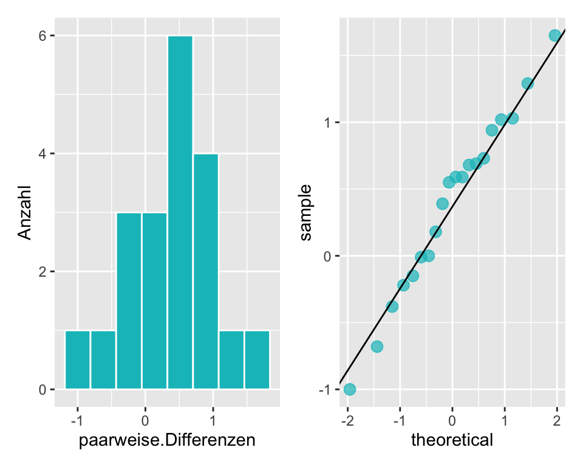
Im Histogramm sind die Daten leicht linksschief verteilt. Im QQ-Plot liegen die Punkte weitgehend auf einer Linie. Daher entscheiden wir für normalverteilte Daten.
3. P-Wert und 95%-Konfidenzintervall berechnen.
- Prüfgrösse (Statistik):
\(T=\frac{\bar{D}-0}{s_D/\sqrt{n}}=\frac{\bar{D}}{s_D/\sqrt{n}}\)
Diese Grösse ist \(t\)-verteilt mit \(n-1\) Freiheitsgraden, \(T\sim t_{19}\)
- Wert der Statistik:
\(t=\frac{\bar{d}}{s_D/\sqrt{n}}= \frac{0.395}{\frac{0.672}{\sqrt{20}}} = 2.629\)
- Signifikanzniveau \(\alpha\) festlegen, üblicherweise \(\alpha = 0.05\)
Den P-Wert für t und df = 20-1 können wir wieder mit R berechnen.
2 * (1-pt(t, df = 20-1)) # P-Wert für zweiseitige Hypothese, t-Verteilung, df = 19Mit \(p\) = 0.017 ist die Wahrscheinlichkeit für den beobachteten Effekt oder einen stärkeren Effekt kleiner als unser Signifkanzniveau \(\alpha = 0.05\) und wir haben Evidenz dafür, dass wir die Nullhypothese zugunsten der Alternativhypothese verwerfen können.
\[CI_{95} = \bar{x} \pm t_{1-\frac{\alpha}{2}, df} \times SE = 0.395 \pm 2.093 \times 0.15\]
qt(.975, 19) # Quantile für t = 0.975 und df = 20- 1[1] 2.093024# P-Wert und 95%-CI berechnen
n <- 20
s <- .672
m <- .395
SE <- s/sqrt(n)
t <- (.395 - 0)/SE
p_wert <- 2 * (1-pt(t, df = 20-1))
p_out <- paste("P-Wert =", round(p_wert, 3))
CI95 <- m + c(-1, 1) * qt(.975, 19) * SE
CI95 <- round(CI95, 3)
CI95_out <- paste("95% CI = [", CI95[1], ", ", CI95[2], "]", sep = "")
# Output
p_out[1] "P-Wert = 0.017"CI95_out[1] "95% CI = [0.08, 0.71]"Die Berechnung ergibt ein 95%-Konfidenzintervall für den Mittelwert der Differenz in der Schlafdauer von 0.395 [0.08, 0.71] Stunden. Das 95%-Konfidenzintervall enthält den Nullwert nicht und wir verwerfen die Nullhypothese zugunsten der Alternativhypothese.
4. Schlussfolgerung formulieren
Untersucht wurde der Einfluss eines Medikaments auf die Schlafdauer bei 20 Probanden. Das Medikament hat die Schlafdauer durchschnittlich um 0.395 [0.08 0.71] Stunden signifikant verlängert, \(t(19)\) = 2.629, \(p\) = 0.017.
4.4.2 Gepaarter t-Test in R
Viel schneller ist man mit der implementierten R-Funktion für den t-Test:
# Variante 1: Als t-Test für gepaarte Stichproben
t.test(x = medi_data$mit_Med, # Baseline-Data
y = medi_data$ohne_Med, # Follow-Up-Data
paired = TRUE, # gepaarte Daten
alternative = "two.sided") # zweiseitige Alternativhypothese
Paired t-test
data: medi_data$mit_Med and medi_data$ohne_Med
t = 2.6237, df = 19, p-value = 0.01672
alternative hypothesis: true mean difference is not equal to 0
95 percent confidence interval:
0.07978913 0.70921087
sample estimates:
mean difference
0.3945 # Variante 2: Als Einstichproben-t-Test mit der Variable paarweise.Differenzen
t.test(x = medi_data$paarweise.Differenzen,
mu = 0,
alternative = "two.sided")
One Sample t-test
data: medi_data$paarweise.Differenzen
t = 2.6237, df = 19, p-value = 0.01672
alternative hypothesis: true mean is not equal to 0
95 percent confidence interval:
0.07978913 0.70921087
sample estimates:
mean of x
0.3945 Der t-Test für gepaarte Stichproben berechnet zuerst die paarweisen Differenzen und ermittelt anschliessend die Teststatistik. Wenn man die paarweisen Differenzen im Datensatz berechnet hat, kann der Einstichproben-t-Test durchgeführt werden. Beide Varianten kommen zum exakt gleichen Ergebnis.
4.5 Zweistichproben-t-Test für unabhängige Stichproben
In diesem Abschnitt beschäftigen wir uns mit der Differenz von zwei Populationsmittelwerten \(\mu_1 - \mu_2\) unter der Voraussetzung, dass die Stichproben unabhängig sind. Typisch sind Vergleiche zwischen zwei Gruppen bzw. Stichproben, z.B. kontrollierte Studien in denen Interventionsgruppe und Kontrollgruppe verglichen werden oder der Vergleich des Gewichts von Neugeborenen von rauchenden und nicht-rauchenden Müttern.
Die Formeln in diesem Abschnitt werden etwas komplizierter. In der Regel lassen wir die Software die Berechnungen durchführen und müssen nicht mit ihnen arbeiten. Für das Verständnis ist es aber gut, wenn Sie sich von diesen Formeln nicht abschrecken lassen. Sie sind einfacher, als sie zunächst aussehen!
4.5.1 Konfidenzintervall für den wahren Mittelwertsunterschied
Im Folgenden werden zuerst die theoretischen Grundlagen erarbeitet, anschliessend folgt ein Schritt-für-Schritt Beispiel für die Durchführung des Zweistichproben-t-Tests für unabhängige Stichproben.
Beispiel: Hat die Behandlung mit embryonalen Stammzellen (ESC) einen Effekt auf die Pumpfunktion des Herzens nach einem Herzinfarkt?
Die folgende Tabelle enthält die Kennzahlen aus einem Experiment, bei dem der Effekt von ESC bei Schafen, die einen Herzinfarkt erlitten hatten, geprüft wurde. Jedes dieser Schafe wurde randomisiert der Gruppe ESC oder der Kontrollgruppe zugewiesen, dann wurde ihre Herzkapazität (Auswurffraktion) gemessen (Ménard et al. 2005). Ein positiver Wert entspricht einer Steigerung der Auswurffraktion, was einer besseren Erholung entspricht. Unsere erste Aufgabe ist es, das 95%-Konfidenzintervall für den Effekt der ESCs auf die Herzfunktion im Vergleich zur Kontrollgruppe zu berechnen.
Codebook für den Datensatz stemcell .
| Variable | Beschreibung |
|---|---|
| trtm | Behandlung: ctrl = Kontrolle, esc= embryonale Stammzellen |
| before | Baseline: Auswurffraktion vor der Behandlung |
| after | Follow-Up: Auswurffraktion nach der Behandlung |
| trmt | before | after |
|---|---|---|
| ctrl | 35.25 | 29.50 |
| ctrl | 36.50 | 29.50 |
| ctrl | 39.75 | 36.25 |
| ctrl | 39.75 | 38.00 |
| ctrl | 41.75 | 37.50 |
| ctrl | 45.00 | 42.75 |
| ctrl | 47.00 | 39.00 |
| ctrl | 52.00 | 45.25 |
| ctrl | 52.00 | 52.25 |
| esc | 29.00 | 31.00 |
| esc | 29.50 | 43.75 |
| esc | 34.00 | 36.00 |
| esc | 35.00 | 41.50 |
| esc | 35.25 | 39.50 |
| esc | 42.50 | 40.00 |
| esc | 44.00 | 45.75 |
| esc | 49.25 | 55.25 |
| esc | 53.75 | 51.00 |
Nach dem Erstellen einer abgeleiteten Variable Differenz = after - before berechnen wir die Kennzahlen für den Effekt der Behandlung.
| trmt | n | m | s |
|---|---|---|---|
| esc | 9 | 3.50 | 5.17 |
| ctrl | 9 | -4.33 | 2.76 |
Die Kennzahlen zeigen, dass die Auswurffraktion in der Kontrollgruppe CTRL um durchschnittlich -4.33% abgenommen und in der Interventionsgruppe ESC um 3.5% zugenommen hat.
\[\bar{x}_{int} - \bar{x}_{ctrl} = 3.5 - (-4.33) = 7.83\]
Für die Prüfung, ob wir die \(t\)-Verteilung anwenden können, müssen wir die bisher verwendeten Voraussetzungen etwas erweitern:
Unabhängigkeit: Die Daten müssen sowohl zwischen den Stichproben als auch innerhalb der Stichproben unabhängig sein. Dies wird dadurch sichergestellt, dass die Beobachtungseinheiten randomisiert aus der Population ausgewählt und randomisiert den Gruppen Intervention oder Kontrolle zugeteilt werden.
Normalverteilung: Die Daten müssen in beiden Stichproben normalverteilt sein. Wäre das \(n\) gross, könnte man diese Voraussetzung vernachlässigen (zentraler Grenzwertsatz).
\(I\) stehe für Intervention und \(C\) für Kontrolle. Die Teststatistik oder Prüfgrösse \(T\) ist der standardisierte Zwischengruppenunterschied
\[ T=\frac{(\bar{X}_I-\bar{X}_C)-\delta_0}{SE(\bar{X}_I-\bar{X}_C)}=\frac{(\bar{X}_I-\bar{X}_C)}{SE(\bar{X}_I-\bar{X}_C)}, \] mit \(\delta_0=\mu_I-\mu_C=0\) als dem postulierten Effekt unter \(H_0\). (\(\delta_0\) muss aber nicht immer 0 sein!)
Für die Berechnung des Standardfehlers unterscheidet man zwischen homogenen Varianzen (normaler \(t\)-Test) und heterogenen Varianzen (Welch-Test). Bei Annahme von homogenen Varianzen (\(\sigma_I^2=\sigma_C^2\)), ist der Standardfehler \[ SE(\bar{X}_I-\bar{X}_C)=\sqrt{\frac{1}{n_I}+\frac{1}{n_C}} \times\underbrace{ {\sqrt{\frac{(n_I-1)s^2_I+(n_C-1)s^2_C}{n_I+n_C-2}}}}_{s_{pooled}}, \] mit \(s_{pooled}\) als der gepoolten Standardabweichung.
Bei Annahme von heterogenen Varianzen (\(\sigma_I^2 \neq \sigma_C^2\)) ist der Standardfehler \[ SE(\bar{X_I}-\bar{X_C})=\sqrt{\frac{s_I^2}{n_I}+\frac{s_C^2}{n_C}}. \]
Die Verteilung von \(T\) ist wieder die \(t\)-Verteilung: Bei homogenen Varianzen ist sie \(t\)-verteilt mit \(n_I+n_C-2\) Freiheitsgraden, \(T\sim t_{n_I+n_C-2}\). Bei heterogenen Varianzen gilt auch eine \(t\)-Verteilung, aber mit komplexeren Freiheitsgraden (das macht dann R für uns.)
Für das Verständnis ist es gut, wenn Sie diese Berechnungen mindestens einmal von Hand durchführen. In der Praxis wird dafür Software verwendet, siehe unten.
Prüfung der Voraussetzungen
- Unabhängigkeit ist gegeben, da die Schafe randomisiert ausgewählt und den Gruppen Intervention oder Kontrolle zugeordnet wurden.
- Prüfung der Normalverteilung anhand von Histogramm und QQ-Plot: Wir entscheiden für normalverteilte Daten.
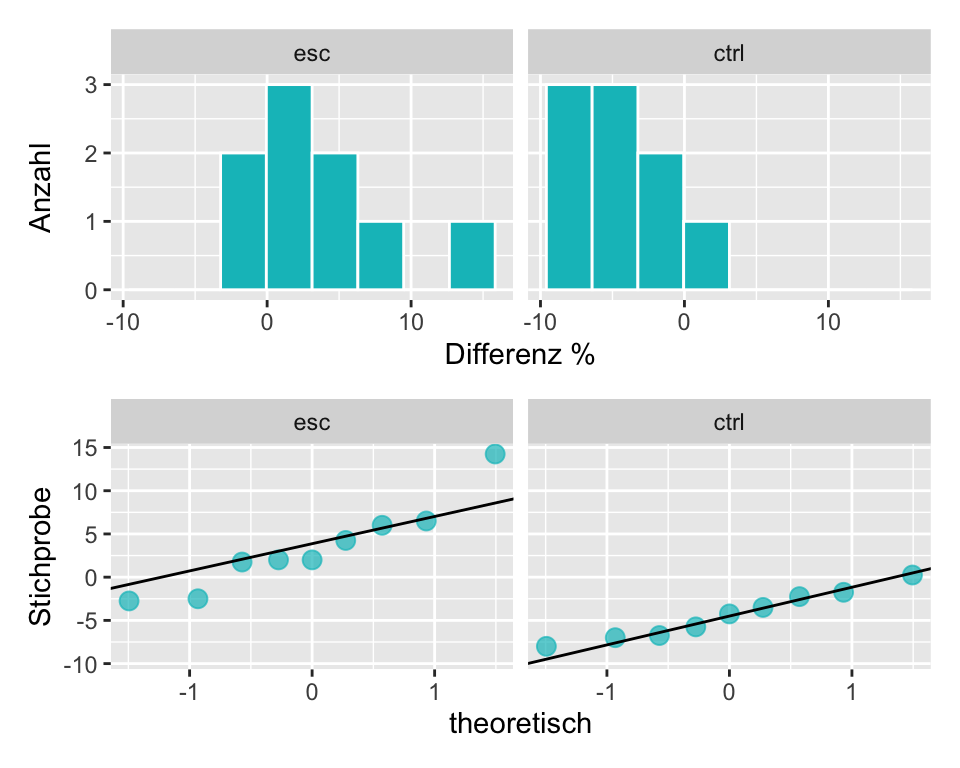
Anhand der Erläuterungen oben kann der Standardfehler für die Mittelwertsdifferenz wie folgt berechnet werden:
\[ s_{pooled}^2 = \frac{1}{16} \times (8 \times 5.17^2 + 8 \times 2.76^2) = 17.173 \]
\[ s_{pooled} = \sqrt{17.173} = 4.144 \]
\[ SE =4.144 \times \sqrt{\frac{1}{9} + \frac{1}{9}} = 1.954 \]
Die Anzahl Freiheitsgrade \(df\) der \(t\)-Verteilung ist \((n_I + n_C - 2) = (9 + 9 - 2) = 16\). Weil in diesem Fall die Gruppen gleich gross sind, also \(n_I = n_C\), hätte es die Berechnung von \(s_{pooled}\) nicht gebraucht, sie wurde aber zur Vollständigkeit dennoch gezeigt, da im Allgemeinen \(n_1\neq n_2\) sein muss.
Das 0.975-Quantil der \(t\)-Verteilung mit \(df = 16\) ist
qt(.975, 16) [1] 2.119905Durch Einsetzen können wir jetzt das 95%-Konfidenzintervall für die wahre Differenz des Effekts zwischen den beiden Stichproben berechnen:
\[CI_{95} = 7.83 \pm 2.12 \times 1.95 = [3.7; 11.96].\]
Das 95%-Konfidenzintervall beinhaltet Null nicht und wir haben somit Evidenz gegen \(H_0\). Die Behandlung mit embryonalen Stammzellen bei Schafen, die einen Herzinfarkt erlitten haben, verbessert die Pumpfunktion des Herzens im Durchschnitt um 7.83% [3.7%, 11.96%] im Vergleich zu keiner Behandlung. Dies entspricht einer statistisch signifikanten Verbesserung.
Die manuelle Berechnung stimmt bis auf Rundungsdifferenzen mit dem Resultat der t.test() Funktion in R überein:
t.test(Differenz ~ trmt, # Die Differenz wird nach Gruppe analysiert
data = stem_cell, # Die Daten kommen aus dem Datensatz stem_cell
alternative = "two.sided", # Zweiseitiger Test (defalut Einstellung)
var.equal = TRUE) # Es wird angenommen, dass die Varianzen der beiden Stichproben gleich sind (siehe unten)
Two Sample t-test
data: Differenz by trmt
t = 4.0073, df = 16, p-value = 0.001016
alternative hypothesis: true difference in means between group esc and group ctrl is not equal to 0
95 percent confidence interval:
3.689376 11.977290
sample estimates:
mean in group esc mean in group ctrl
3.500000 -4.333333 Beim t.test() oben habe ich R mit var.equal = TRUE gesagt, dass die Standardabweichung in den beiden Populationen, aus der die Stichproben kommen, gleich ist. Homogene Stichprobenvarianzen sind im Prinzip eine weitere Voraussetzung für einen \(t\)-Test. Warum sage ich im Prinzip? Weil es ein einfache Lösung gibt: Wenn man den t.test() ohne diese zusätzliche Information in R durchführt, dann korrigiert R automatisch, falls die Stichprobenvarianzen doch nicht homogen sind.
t.test(Differenz ~ trmt, # Die Differenz wird nach Gruppe analysiert
data = stem_cell) # Die Daten kommen aus dem Datensatz stem_cell
Welch Two Sample t-test
data: Differenz by trmt
t = 4.0073, df = 12.225, p-value = 0.001678
alternative hypothesis: true difference in means between group esc and group ctrl is not equal to 0
95 percent confidence interval:
3.582916 12.083750
sample estimates:
mean in group esc mean in group ctrl
3.500000 -4.333333 In diesem Fall wird ein sogenannter Welch’s Test durchgeführt. Die Berechnung dieser Korrektur ist kompliziert, die Interpretation des Tests aber genau gleich, wie beim t-Test. Wir sehen, dass sich die beiden Testvarianten nur sehr geringfügig unterscheiden. Das ist oft der Fall. Wenn man nicht zu einer Berechnung von Hand gezwungen wird, empfiehlt sich, immer einen Welch’s Test durchzuführen. Somit entfällt die Voraussetzung bzgl. homogener Stichprobenvarianzen.
4.5.2 Vorgehen
Wir verwenden ein neues Beispiel.
Frage: Hat es einen Einfluss auf das Geburtsgewicht von Neugeborenen, wenn schwangere Frauen rauchen? Wir prüfen diese Frage anhand eines Datensatzes, der eine Zufallsstichprobe von 150 Müttern und ihren Neugeborenen umfasst. Die Variable smoke erfasst, ob die Mutter während der Schwangerschaft geraucht hat oder nicht und die Variable weight gibt das Geburtsgewicht in g an. Die Raucherinnengruppe umfasst 50 Mütter, die Nichtraucherinnengruppe 100 Mütter.
Die Tabelle gibt die ersten 5 Einträge im Datensatz an:
| f_age | m_age | weeks | premature | visits | gained | weight | sex_baby | smoke | |
|---|---|---|---|---|---|---|---|---|---|
| 1 | 31 | 30 | 39 | full term | 13 | 1 | 3121 | male | smoker |
| 60 | 30 | 28 | 39 | full term | 13 | 0 | 3402 | female | nonsmoker |
| 70 | 43 | 31 | 41 | full term | 5 | 20 | 3202 | female | smoker |
| 3 | 36 | 35 | 40 | full term | 12 | 29 | 4028 | male | nonsmoker |
| 71 | 33 | 27 | 41 | full term | 15 | 38 | 3175 | male | smoker |
Das Vorgehen für die statistische Analyse ist wie bisher:
- Vorbereitung: Identifiziere den für die Frage relevanten Parameter (die Prüfgrösse), formuliere die Hypothesen und lege das Signifikanzniveau \(\alpha\) fest.
- Prüfe, ob die Voraussetzungen (Unabhängigkeit der Daten, Normalverteilung) erfüllt sind.
- Wenn die Voraussetzungen erfüllt sind, berechne \(SE\), das 95%-Konfidenzintervall, den \(t\)-Wert und den P-Wert mit der entsprechenden \(t\)-Verteilung.
- Schlussfolgerung: Beurteile den Hypothesentest, indem du den P-Wert mit dem Signifkanzniveau \(\alpha\) vergleichst. Formuliere eine Schlussfolgerung im Zusammenhang mit der Fragestellung in leicht verständlicher Sprache.
1. Hypothesen formulieren
Hypothesen:
- \(H_0: \mu_s = \mu_{ns}\), der Raucherstatus hat keinen Einfluss auf das Geburtsgewicht von Neugeboren.
- \(H_A: \mu_s \neq \mu_{ns}\), der Raucherstatus hat einen Einfluss auf das Geburtsgewicht von Neugeboren.
2. Voraussetzungen prüfen
- Es handelt sich um eine Zufallsstichprobe, die Daten sind unabhängig.
- Histogramm und QQ-Plot zeigen eine linksschiefe Verteilung für beide Gruppen. Weil \(n\) gross ist, kann man gut mit dem zentralen Grenzwertsatz argumentieren, das die Mittelwertsdifferenzen normalverteilt sind.
- Ob die Streuung der Daten in beiden Stichproben gleich ist interessiert uns nur, wenn wir kein
Rzur Verfügung haben. Wir haben aberRund führen grundsätzlich den Welch’s-Test durch, der eine Anpassung des Zweistichproben-t-Tests für ungleiche Varianzen macht.
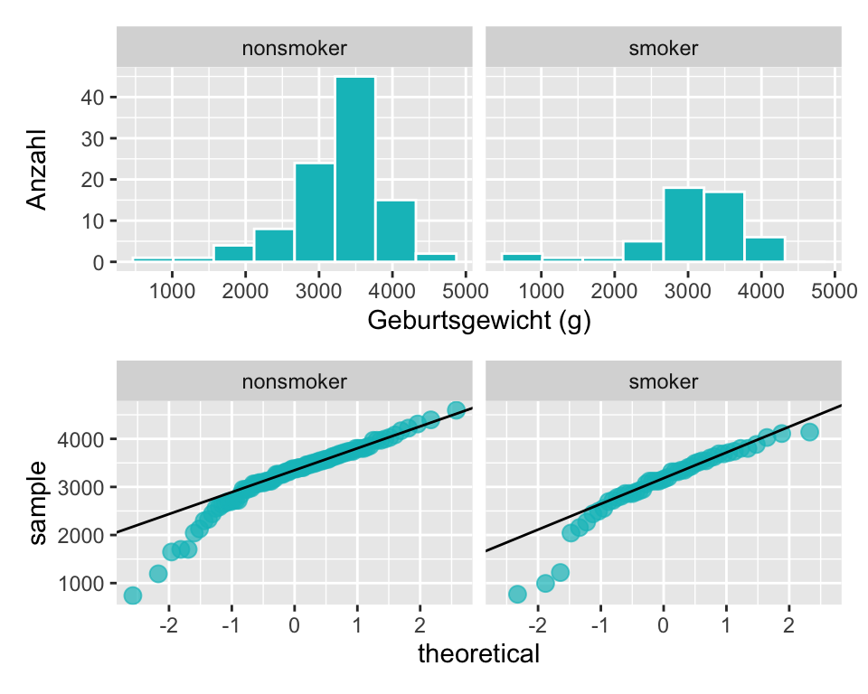
Berechnungen von Kennzahlen, SE, t-Wert und P-Wert
| smoke | n | m | s |
|---|---|---|---|
| nonsmoker | 100 | 3256.6 | 650.53 |
| smoker | 50 | 3075.0 | 724.61 |
Neugeborene von nicht-rauchenden Müttern sind im Durchschnitt \(3256.6 - 3075.0 = 181.6g\) schwerer als von rauchenden Müttern.
Berechnung des Standardfehlers \(SE\) der Prüfgrösse:
\[ s_{pooled}^2 = \frac{1}{148} \times (99 \times 651^2 + 49 \times 725^2) = 457513 \]
\[ S_{pooled} = \sqrt{457513} = 676.397 \]
\[ SE=676.397 \times \sqrt{\frac{1}{100} + \frac{1}{50}} = 117.155 \]
Berechnung des 95%-Konfidenzintervalls. Das 0.975-Quantil ist
qt(.975, df = 148)[1] 1.976122\[CI_{95} = 181.6 \pm 1.976 \times 117.155 = [-49.9; 413.1]\]
Neugeborene von Nichtraucherinnen sind im Durchschnitt um 181.6 [-49.9; 413.1] schwerer als Neugeborene von Raucherinnen. Das 95%-Konfidenzintervall beinhaltet Null, d.h. kein Unterschied im Geburtsgewicht ist ein plausibler Wert, und wir haben keine Evidenz gegen die Nullhypothese.
Berechnung des t-Werts:
\[t = \frac{181.6}{117.155} = 1.55\]
Berechnung des P-Werts:
Die Anzahl Freiheitsgrade \(df = 100 + 50 - 2 = 148\): Wir können den P-Wert für \(t\) wieder in einer Tabelle nachschlagen oder mit R berechnen:
2 * (1 - pt(1.55, df = 148)) # P-Wert für eine zweiseitige Hypothese und df = 148[1] 0.1232773Dieser P-Wert ist grösser als \(\alpha = 0.05\) und wir haben keine ausreichende Evidenz, um die Nullhypothese zu verwerfen.
Schlussfolgerung: Untersucht wurde die Frage, ob Neugeborene von rauchenden Müttern ein anderes Geburtsgewicht haben als Neugeborene von nichtrauchtenden Müttern. Anhand der vorliegenden Daten konnte kein statistisch signifikanter Unterschied für das Geburtsgewicht von Neugeborenen rauchender und nichtrauchender Mütter festgestellt werden: Neugeborene von nichtrauchenden Müttern sind im Durchschnitt 181.6 [-49.9; 413.1] leichter als von nichtrauchenden Müttern, \(t(148) = 1.55, ~ p = 0.123\).
Der untenstehende Output zeigt, dass der t-Test bis auf Rundungsdifferenzen zum gleichen Resultat kommt:
Two Sample t-test
data: weight by smoke
t = 1.5511, df = 148, p-value = 0.123
alternative hypothesis: true difference in means between group nonsmoker and group smoker is not equal to 0
95 percent confidence interval:
-49.7637 412.9637
sample estimates:
mean in group nonsmoker mean in group smoker
3256.6 3075.0 Anmerkung: Dies ist ein vergleichsweise kleiner Datensatz; grössere Datensätze in aktuellen Studien liefern Evidenz dafür, dass Neugeborene von rauchenden Müttern ein geringeres Geburtsgewicht aufweisen als von nichtrauchenden Müttern. In den 70er-Jahren hat die Tabak-Industrie diese Tatsache sogar als Werbung mit dem Argument benutzt, dass Mütter kleinere Babies bei der Geburt bevorzugen (Reeves and Bernstein 2008).
4.6 Nicht-parametrische Tests
Die bisher besprochenen Testverfahren (t-Tests) können nur durchgeführt werden, wenn gewisse Voraussetzungen erfüllt sind:
- Besonders bei kleineren Stichprobenumfängen müssen die Daten aus einer normalverteilten Population stammen. Wir kontrollieren das jeweils mittels Histogramm und QQ-Plot.
- Der Stichprobenumfang sollte nicht zu klein sein (z.B. \(n < 12\))
- Es handelt sich um quantitative Daten.
Es stellt sich nun die Frage, wie man Hypothesentests durchführt, wenn diese Bedingungen nicht erfüllt sind. Nicht-parametrische Tests sind nicht unumstritten, weil sie oft “nur” noch einen P-Wert und kein Konfidenzintervall liefern. Die Berechnugnen basieren meistens nicht auf Mittelwerten sondern auf Rängen, was die Interpretation schwierig macht. Zuletzt stellt sich bei sehr kleinen Stichproben ohnehin die Frage, ob es sinnvoll ist, inferenzstatistische Schlussfolgerungen zu ziehen. Hier werden zur Vollständigkeit die am meist gebrauchten nicht-parametrischen Verfahren vorgestellt. Es sei angemerkt, dass mittlerweile moderne Methoden existieren (ich bin z.B. Fan von diesem Approach).
Die nicht-parametrischen Verfahren sind nicht prüfungsrelevant.
4.6.1 Rang-Methoden (rank tests)
Rangtests spielen in der Klasse der nichtparametrischen Verfahren eine dominierende Rolle. Dabei ist die zu berechnende Teststatistik nur eine Funktion der rangierten (geordneten) Beobachtungen; die Beobachtungswerte selber werden nicht verwendet. Dies bedeutet, dass man nur die ordinale Information der Daten nutzt. Daher ist auch die Mindestanforderung an die Daten, dass sie qualitativ-ordinal skaliert sind.
Mathematisches Detail (nicht zu lernen): Die nichtparametrischen Methoden arbeiten mit diskreten Verteilungen. Die Berechnung von P-Werten erfolgt jedoch über eine sog. Approximation (Annäherung) an die Normalverteilung, welche eine kontinuierliche Verteilung ist. Bei der Aproximation einer diskreten an eine kontinuierliche Verteilung muss ein Korrekturfaktor Kontinuitätskorrektur (engl. continuity correction) eingeführt werden, der in der Ausgabe von Statistikprogrammen erwähnt wird.
4.6.2 Wilcoxon-Vorzeichenrangtest
Der Wilcoxon-Vorzeichenrangtest wird für gepaarte Daten oder den Einstichprobenfall gewählt.
Beispiel: Wie Lange dauert eine Schwangerschaft? Und hängt die genaue Bestimmung von der Untersuchungsmethode ab? Zur Verfügung stehen zwei Methoden um die Schwangerschaftsdauer zu bestimmen: Einerseits die Methode der letzten Menstruationsperiode (LMP) und andererseits die Ultraschallmethode (US). Zufällig werden zehn schwangere Frauen ausgewählt und nach beiden Methoden die Schwangerschaftsdauer bestimmt. Die Untersuchung wird blindiert durchgeführt, so dass die LMP-Untersucher:innen die Ergebnisse der US-Untersucher:innen nicht kennen und umgekehrt.
Die Bestimmung der Schwangerschaftsdauer bei zehn schwangeren Frauen einer einfachen Stichprobe aus der gegebenen Population liefert folgende LMP und US Daten:
| ID | LMP | US | LMPminusUS |
|---|---|---|---|
| 1 | 275 | 273 | 2 |
| 2 | 292 | 285 | 7 |
| 3 | 281 | 270 | 11 |
| 4 | 284 | 272 | 12 |
| 5 | 285 | 278 | 7 |
| 6 | 283 | 276 | 7 |
| 7 | 290 | 291 | -1 |
| 8 | 294 | 290 | 4 |
| 9 | 300 | 279 | 21 |
| 10 | 284 | 292 | -8 |
Wie können wir diese Daten interpretieren?
Als erstes berechnen wir die Kennzahlen und erstellen Grafiken zum Vergleich der beiden Bestimmungsmethoden.
| name | m | Median | s |
|---|---|---|---|
| LMP | 286.8 | 284.5 | 7.2 |
| US | 280.6 | 278.5 | 8.3 |
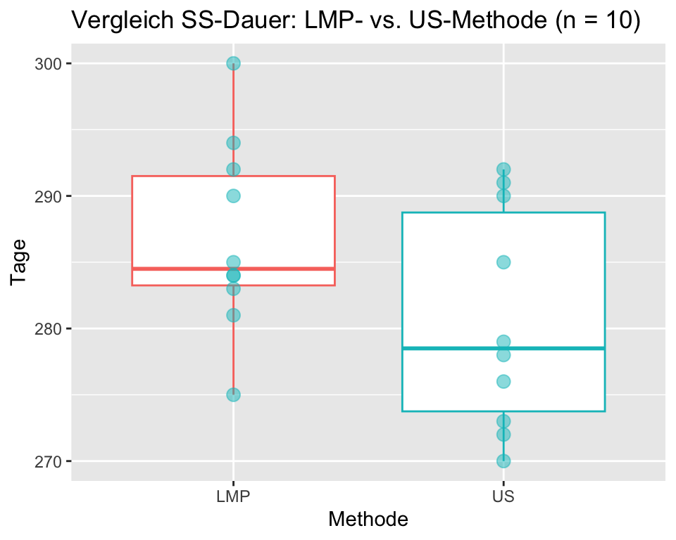
Der Vergleich von Mittelwert und Median und die Boxplots zeigen, dass die Daten linkssteil verteilt sind. Zudem ist der Stichprobenumfang mit n = 10 klein. Die Voraussetzungen für einen t-Test für gepaarte Daten sind zumindest fraglich.
Hypothesen:
\(H_0: Median_{LMP} = Median_{US}\), die LMP- und die US-Methode ergeben die gleiche Schwangerschaftsdauer.
\(H_A: Median_{LMP} \neq Median_{US}\), die LMP- und die US-Methode ergeben eine unterschiedliche Schwangerschaftsdauer.
Merke: Beim Wilcoxon-Vorzeichenrangtest vergleichen wir Mediane und nicht Mittelwerte!
Signifikanzniveau: \(\alpha = 0.05\)
Vorgehen Wilcoxon-Vorzeichenrangtest
Das Prinzip des Wilcoxon-Vorzeichen-Rangtests wird hier exemplarisch an einem Beispiel erläutert. Üblicherweise wird der Test in einem Statistikprogramm durchgeführt.
Gilt die Nullhypothese, so kann die Differenz der LMP- und US-Werte einer schwangeren Frau sowohl positiv wie auch negativ sein; weder positive noch negative Werte sollten überwiegen und die Differenzen sollten symmetrisch um Null verteilt sein. Der Wilcoxon-Vorzeichen-Rangtest prüft, ob die paarweisen Differenzen symmetrisch mit dem Median gleich Null verteilt sind.
Zur Durchführung des Tests werden diese Differenzen passend nach Rängen geordnet (rangiert). Es werden die absoluten Differenzen (Abstände zu Null) rangiert, ohne das Vorzeichen zu beachten. Ist eine Differenz Null, wird sie bei der Rangierung nicht verwendet und vom Stichprobenumfang n abgezogen.
| ID | LMP | US | LMPminusUS | Rang | Vorzeichen |
|---|---|---|---|---|---|
| 1 | 275 | 273 | 2 | 2 | plus |
| 2 | 292 | 285 | 7 | 5 | plus |
| 3 | 281 | 270 | 11 | 8 | plus |
| 4 | 284 | 272 | 12 | 9 | plus |
| 5 | 285 | 278 | 7 | 5 | plus |
| 6 | 283 | 276 | 7 | 5 | plus |
| 7 | 290 | 291 | -1 | 1 | minus |
| 8 | 294 | 290 | 4 | 3 | plus |
| 9 | 300 | 279 | 21 | 10 | plus |
| 10 | 284 | 292 | -8 | 7 | minus |
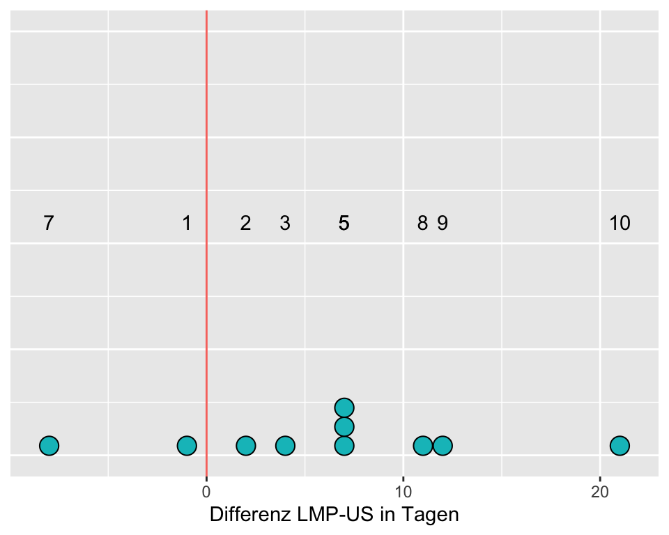
Wenn die Differenzen symmetrisch um Null angeordnet sind, haben wir Evidenz dafür, dass \(H_0\) wahr ist. Beachte, dass einige dieser Differenzen der Schwangerschaftsdauer gleich sind. Der Wert 7 kommt drei Mal vor. Diesen drei Werten sollten die Ränge 4, 5 und 6 zugeordnet werden. Ihr mittlerer Rang (Mittelwert von 4, 5 und 6) ist 5. Deshalb wird dieser mittlere Rang jedem der drei Werte zugeordnet.
Wir vergleichen jetzt die Summe der positiven Ränge mit der Summe der negativen Ränge. Sind diese beiden Rangsummen etwa gleich gross, haben wir keine Evidenz gegen die Nullhypothese, andernfalls werden wir die Nullhypothese ablehnen. Als einfache Teststatistik W verwenden wir Rangsumme der positiven Differenzen.
Summe der positiven Ränge: 2 + 3 + 5 + 5 + 5 + 8 + 9 + 10 = 47
Summe der negativen Ränge: 1 + 7 = 8
Teststatistik \(W\) (in R Teststatistik \(V\)) = 47
Berechnung des P-Werts für \(W = 47\) und \(n = 10\)
W <- 47
p_Wert <- 2 * psignrank(W, n = 10, lower.tail = FALSE)
round(p_Wert, 3) [1] 0.037Schlussfolgerung: In einer Stichprobe von n = 10 schwangeren Frauen wurde die Frage untersucht, wie lange eine Schwangerschaft dauert und ob die Untersuchungsmethoden US und LMP zum gleichen Ergebnis kommen. Die Methode US ergibt gegenüber der Methode LMP eine um durchschnittlich um 6.2 Tage kürzere Schwangerschaftsdauer, Wilcoxon-Vorzeichenrangtest W = 47, p = 0.037.
Auch hier gibt es natürlich eine implementierte R Funktion:
wilcox.test(ss$LMP, ss$US,
alternative = "two.sided",
correct = TRUE) # mit Kontinuitätskorrektur
Wilcoxon rank sum exact test
data: ss$LMP and ss$US
W = 70.5, p-value = 0.1277
alternative hypothesis: true location shift is not equal to 0Anmerkung:
- Bei der Berechnung in
Rkann entspricht die ausgegebene Teststatistik V unserem Wert \(W\). - In
Rkann entschieden werden, ob die Kontinuitätskorrektur durchgeführt wird oder nicht. Bei unterschiedlichen Stichprobenumfängen sollte dies immer geschehen.
4.6.3 Mann-Whitney-U-Test
Der Mann-Whitney-U-Test (= Wilcoxon-Rangsummentest) wird für den Vergleich von zwei Stichproben verwendet, wenn die Daten nicht normalverteilt sind.
Beispiel: Erreichen Studierende, die während einer Woche täglich 30 Minuten Statistikübungen machen, bessere Noten in einer Statistikprüfung? Für diese Studie wurden 15 Studierende zufällig ausgewählt und zufällig den Gruppen INT (n = 8) und CON (n = 7) zugeteilt. Beide Gruppen besuchten die Statistikvorlesung. Die Studierenden der Gruppe INT machten zusätzlich während einer Woche täglich 30 Min. Statistikübungen, die Gruppe CON machte keine Statistikübungen. Nach einer Woche wurde ein Statistiktest durchgeführt, der mit 0 bis 100 Punkten bewertet wurde.
| INT | CON |
|---|---|
| 89, 92, 94, 96, 91, 99, 84, 90 | 88, 93, 95, 75, 72, 80, 81 |
| Gruppe | n | m | Median | s |
|---|---|---|---|---|
| CON | 7 | 83.43 | 81.0 | 8.81 |
| INT | 8 | 91.88 | 91.5 | 4.58 |
Die deskriptive Analyse ergibt, dass die Interventionsgruppe im Durchschnitt 8.45 Punkte mehr erreicht als die Kontrollgruppe. Der Stichprobenumfang ist kleiner als 30 und die Daten sind leicht linkssteil verteilt; daher könnten die Voraussetzungen für einen t-Test nicht erfüllt sein.
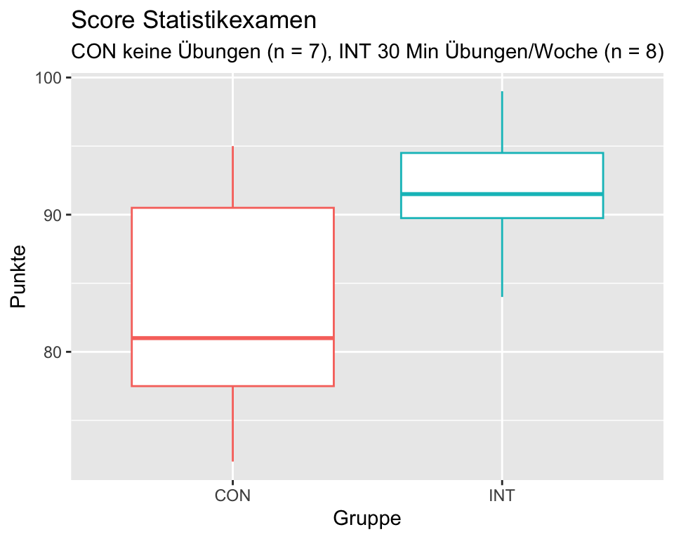
Hypothesen
\(H_0: P(INT > CON) = P(CON > INT)\), die Summen der Rangplätze von INT und CON unterscheiden sich nicht.
\(H_A: P(INT > CON) \neq P(CON > INT)\), die Summen der Rangplätze von INT und CON unterscheiden sich.
Signifikanzniveau \(\alpha = 0.05\)
Für den Mann-Whitney-U-Test berechnen wir die Teststatistik U. \(U\) ist der kleinere Wert von den beiden \(U_1\) und \(U_2\), die wie folgt berechnet werden:
\(U_1 = n_1 \times n_2+\frac{n_1 \times (n_1+1)}{2} - R_1\)
\(U_2 = n_1 \times n_2+\frac{n_2 \times (n_2+1)}{2} - R_2\)
wobei, \(n_1\) und \(n_2\) die jeweiligen Stichprobenumfänge und \(R_1\) und \(R_2\) die Rangsummen der Gruppen 1 und 2 sind.
| Gruppe | Punkte | Rang |
|---|---|---|
| INT | 99 | 1 |
| INT | 96 | 2 |
| CON | 95 | 3 |
| INT | 94 | 4 |
| CON | 93 | 5 |
| INT | 92 | 6 |
| INT | 91 | 7 |
| INT | 90 | 8 |
| INT | 89 | 9 |
| CON | 88 | 10 |
| INT | 84 | 11 |
| CON | 81 | 12 |
| CON | 80 | 13 |
| CON | 75 | 14 |
| CON | 72 | 15 |
| Gruppe | Rangsumme |
|---|---|
| CON | 72 |
| INT | 48 |
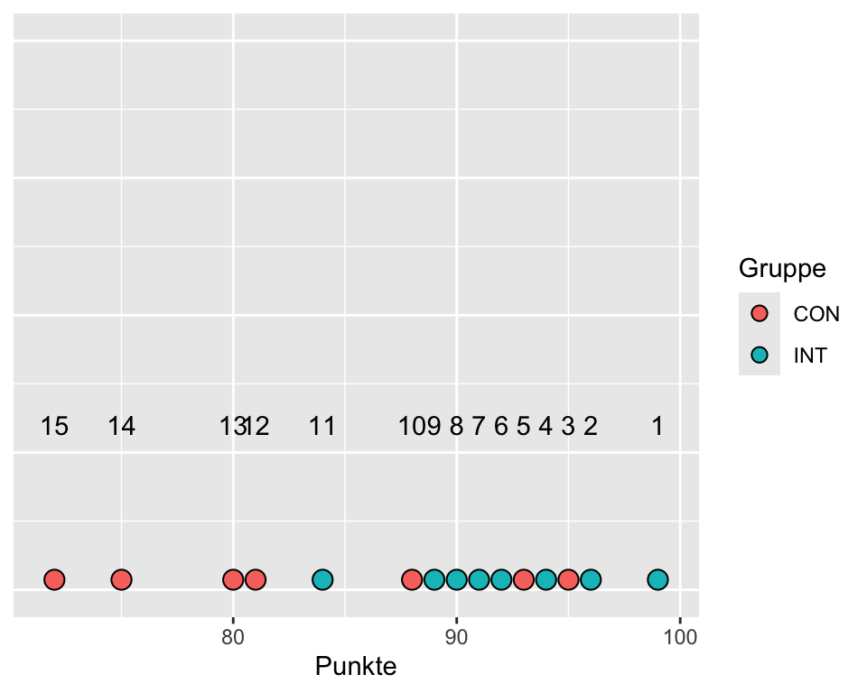
Berechnung der Teststatistiken \(U_1\) für die Interventionsgruppe und \(U_2\) für die Kontrollgruppe
\(U_1 = 8\times7+\frac{8(8+1)}{2} - 48 = 44\)
\(U_2 = 8\times7+\frac{7(7+1)}{2} - 72 = 12\)
Unsere Teststatistik \(U\) ist die kleinere der beiden Grössen \(U_1\) und \(U_2\): \(U = 12\)
Berechnung des P-Werts mit R
U <- 12
p_Wert <- 2 * (1 - pwilcox(U, m = 8, n = 7, lower.tail = FALSE))
p_Wert[1] 0.07210567Da der P-Wert mit 0.0721 grösser als \(\alpha = 0.05\) verwerfen wir die Nullhypothese nicht.
Schlussfolgerung: Untersucht wurde die Frage, ob Studierende, die während einer Woche täglich 30 Minuten Statistikübungen machen, bessere Punktzahlen erreichen als Studierende, die das nicht tun. Studierende, die während einer Woche täglich 30 Minunten Statistikübungen machen, erreichten in unserer Studie im Durchschnitt eine um 8.45 Punkte höhere Punktzahl in der Statistikprüfung, Mann-Whitney-U = 12, p = 0.0721. Damit liegt keine Evidenz dafür vor, dass sich die Prüfungsergebnisse im Durchschnitt zwischen den beiden Gruppen unterscheiden.
Ich hoffe die Ironie dieses Beispiels ist offensichtlich ;-)
In R kann der Mann Whitney U Test wie folgt durchgeführt werden:
wilcox.test(
Punkte ~ Gruppe, data = statex,
alternative = "two.sided")
Wilcoxon rank sum exact test
data: Punkte by Gruppe
W = 12, p-value = 0.07211
alternative hypothesis: true location shift is not equal to 0Wie einleitend bereits erwähnt, sind die Outputs der nicht-parametrischen Tests weit weniger informativ als jene der t-Tests: Man erhält keine Effektgrösse (man weiss nicht einmal, welche Gruppe favorisiert wird) und man erhält kein Konfidenzintervall.
4.6.3.1 Voraussetzungen für den Mann-Whitney-U-Test:
- Die Daten sind mindestens qualitativ-ordinal skaliert (Likert-Skalen, visuelle Analogskalen).
- Es müssen zwei unabhängige Zufallsstichproben vorliegen.
- Die Daten sollten gleich verteilt sein (z.B. beide linksschief), bzw. die beiden Verteilungen dürfen sich nur durch eine Verschiebung unterscheiden.
Um zu prüfen, ob sich die beiden Stichprobendaten nur durch eine Verschiebung unterscheiden, erstellen Sie am besten einen Plot mit den kumulativen Wahrscheinlichkeitsverteilungen:
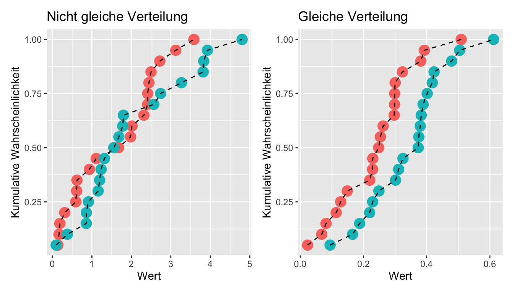
Während die beiden Verteilungen links in Abbildung 4.11 deutlich unterscheiden, unterscheiden sich die beiden Verteilungen rechts nur durch eine Verschiebung. Ein Mann Whitney U Test ist also nur in der Situation rechts angebracht.
4.7 Anhang: hilfreiche R Codes für Mittelwertsvergleiche
# Zuerst werden zwei Variablen simuliert
set.seed(0) # Damit das Ergebnis reproduzierbar ist
x <- rnorm(30, 10, 2) # 30 Werte aus einer Pupulation mit mu = 10 und sigma = 2
y <- rnorm(30, 12, 2) # 30 Werte aus einer Pupulation mit mu = 12 und sigma = 2
# Die Werte von x und y darstellen
boxplot(x, y, xaxt = NULL)
axis(side = 1, at = c(1,2), labels = c("x", "y")) # Überschreiben der x-Achse
# Wenn x und y unabhängig sind: Zweistichproben t-Test
t.test(x, y, paired = FALSE)
wilcox.test(x, y, paired = FALSE) # Nichtparametrische Alternative
# Wenn x und y abhängig (z.B. Prä-Post Messung): Gepaarter t-Test
t.test(x, y, paired = TRUE)
wilcox.test(x, y, paired = TRUE) # Nichtparametrische Alternative
# Ein gepaarter t-Test ist das Gleiche wie ein Einstichproben t-Test auf die Differenz:
t.test(x-y)
# Mu bei einem Einstichproben t-Test definieren:
t.test(x-y, mu = -2) # Unterscheidet sich die mittlere Differenz von -2